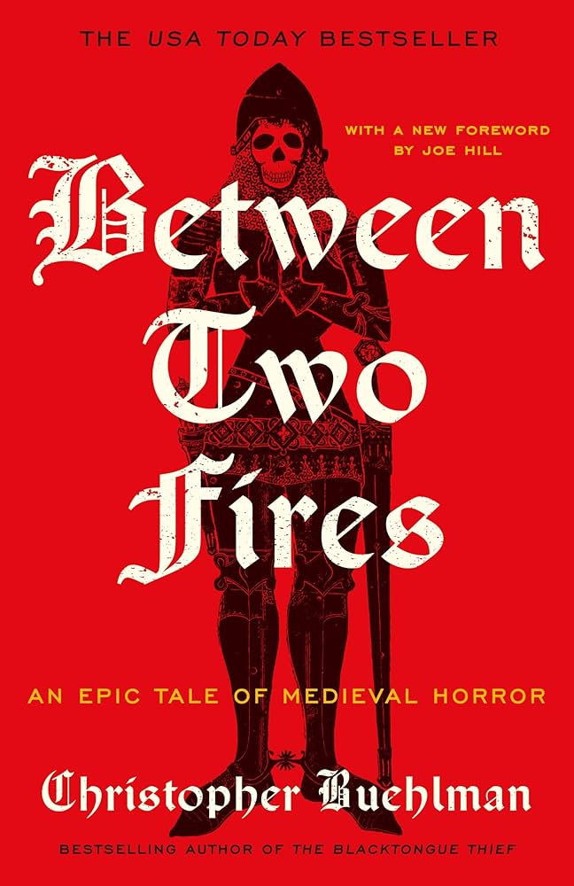

Between Two Fires Blog #1
By Omar Andre

Here's what happened in the story so far:
- First we were introduced to the angels. There are the "fallen" ones and the ones that still stand with god. The fallen ones are attacking earth to try to ragebait god into waking up, but if he doesn't they'll attack heaven because that would mean he's too asleep to fight back.
- Then we meet a group of traveling thiefs. They come across a girl, two of them want to hurt her, one of them is neutral, and Thomas protects her. Thomas kills two of his companions, but leaves Jacquot alive.
- We learn the girl approaches the group because an angel told her to.
- They embark into another small town nearby
- We learn that comets in the sky signal plagues nearby
Thoughts:
- At one point Thomas looks at the girl after destroying the Jacquot's weapon and thought: "He looked at her... thought how odd it was that children were small, and that they found this normal... What did it feel like to know you lived or died at the whim of the giants around you?" This is a parallel to God, I think. The girl is at the mercy of these giant people just as Thomas is at the mercy of God, but he doesn't acknowledge it. This to me signals that while he believes in god, he doesn't really acknowledge him. Yes, god exists but Thomas is the big man, life depends on what HE wants. I don't know if I'm looking too much into it, but I do hope this theme of individual wills vs God's will gets explored more.
- Humans don't seem to know about the angels fighting. The "fallen" angels are never really mentioned, and no one is really blaming the plague on anybody else, not even god. At one point the girl asks: "why would God kill good priests?", and Thomas responds. "The plague kills everything". It grabbed my attention that god is separated from the plague. Thomas doesn't actually answer the girl, he avoids the question. Why doesn't Thomas question god? He is a good person up until now, he was a knight before, he believes in souls and god and everything else, so why does he separate the plague from god?
- Actually people do seem to be aware of something happening in heaven. When disasters started appearing, people started talking about how Judgement day was coming. Thomas at one point says comets were just another sign that "something in Heaven’s mechanism was sprung"
I've been really enjoying this novel. The writing style is very entertaining, the mystery of everything is engaging and the dialogue is well written and the plot feels like it's going somewhere. I give the first chapters a 4.5/5